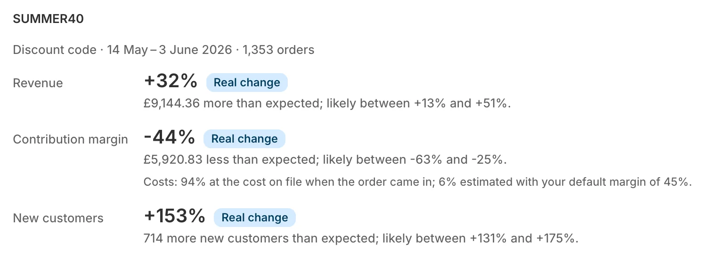
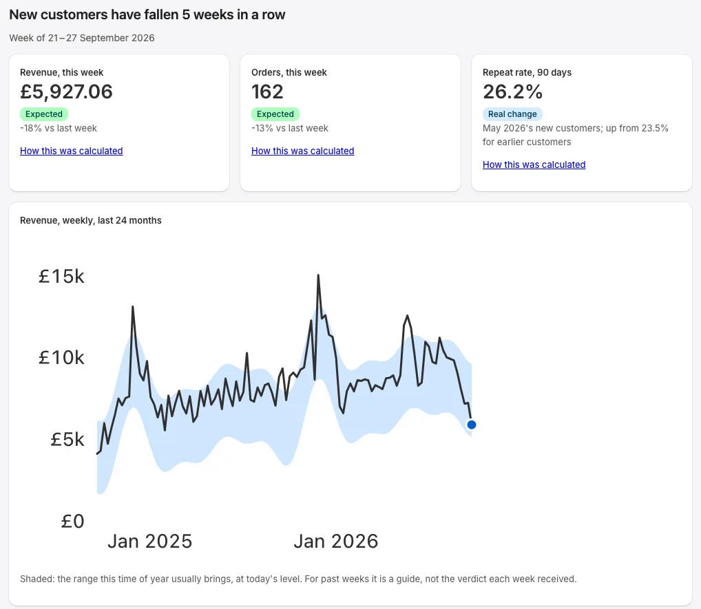
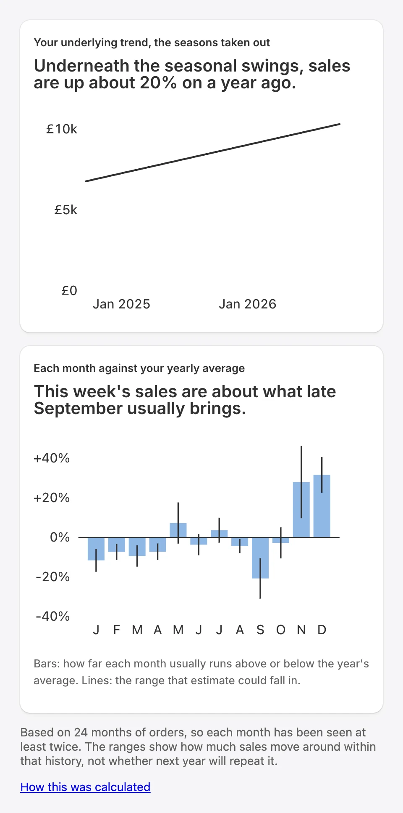

For Shopify stores. Stats Compass checks each week's figures and every promotion against what you'd have sold anyway, and tells you in plain words: expected, real change, noise, or not enough data yet.
Free during early access. We'll only email you about early access.
Check your inbox to confirm.
Or check a past sale free →
Before you set this year's Black Friday discount, check whether last year's paid for itself. It's free, and your file never leaves your computer.
Check a sale →A number on its own can't tell you whether to act. Stats Compass judges each one against what your own history says is normal for this time of year, and says so in plain words.
Within the range this time of year usually brings. Nothing to chase.
Outside the usual range, and too large to be chance. Worth acting on.
It moved, but by no more than week-to-week swings already do.
Too little history to judge, and we tell you how much more it needs.
How we know it works: tested on two years of a real retailer's sales →
A weekly report with a verdict on every headline figure: revenue, orders, average order value, margin, new and returning customers. "Nothing unusual happened" is a complete report.
Each discount's lift in revenue and contribution margin, measured against the sales that were coming anyway, with a range and a verdict. A busy week isn't a profitable one.
Every number opens "How this was calculated": the definition, its version, and how many orders it was computed from.
Connect your Shopify store and Stats Compass reads your orders, products and customers. It never writes to your store. Your seasons, your promotions and your customers are judged against your own history, not an industry average.

Each promotion's lift in revenue, contribution margin and new customers, measured against the sales that were coming anyway, with the range each could fall in. The headline says what it needed to break even and what it brought, and the chart shows daily sales against what was expected without it.
See how Stats Compass compares with Shopify Sidekick on the same question.

Each headline figure with its verdict, and this week against the range this time of year usually brings. When something is worth a look, it leads the report: here, new customers falling five weeks in a row while revenue stays within its usual range.

Your underlying trend with the seasons taken out, how each month usually runs against your yearly average, and a revenue forecast for the next 90 days, each with the range it could fall in. So a busy November reads as November, not as growth.
Free during early access. We'll only email you about early access.
Check your inbox to confirm.
Ask Claude about your store's orders in conversation. Set it up once, in four steps.
Connect your store
In the Stats Compass app in your Shopify admin, click Connect an AI assistant, on the overview or in Settings. Sign in when asked, with Google or email.
Add Stats Compass to Claude
On claude.ai, add a custom connector with:
https://Sign in the same way
When Claude asks you to sign in, use the same sign-in as in step 1, for example the same Google account. A different sign-in is a different account, and won't see your store.
Ask about your store
Start with "Use stats compass to…", for example:
Using ChatGPT, VS Code or Cursor? Add Stats Compass with the install options, then sign in the same way as in step 1.
Analysing your own data in Claude, ChatGPT, VS Code or Cursor? See Stats Compass for data →

Tunji Ogunbiyi
Hi, I'm Tunji, an applied scientist and the creator of Stats Compass. I build tools that tell Shopify stores whether a change in their numbers is real, and whether a sale actually made money, with the working shown. Questions or feedback? Email me directly at tunji@statscompass.io.
The app is free during early access. If we introduce paid plans, we'll tell you before anything changes, and you choose whether to stay.
No. Stats Compass reads your orders, products and customers. It never writes to your store.
About 13 months of orders, so each week and each promotion can be compared with the same time last year. With less, it says "Not enough data yet" for what it can't judge, and how much more it needs.
We'll tell you when you can try Stats Compass on your store.
Free during early access. We'll only email you about early access.
Check your inbox to confirm.